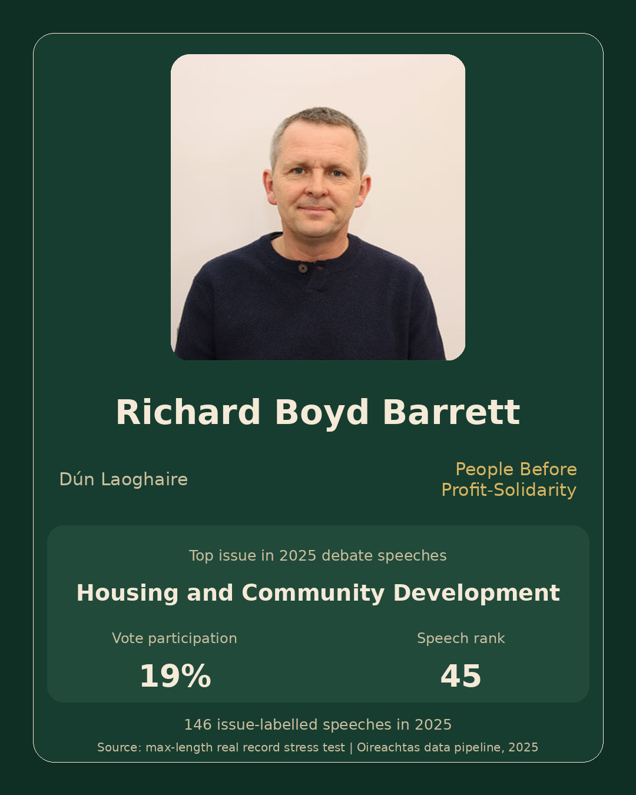

Richard Boyd Barrett
People Before Profit-Solidarity · Dún Laoghaire

- Top issue
- Housing and Community Development
- Vote participation
- 19%
- Speech rank
- 45
- Speech count
- 146
- Warnings
- None
- Bindings
metadata/bindings/richard-boyd-barrett.yml- Render manifest
metadata/manifests/richard-boyd-barrett.render_manifest.json
Review status: needs_review · Publish ready: no